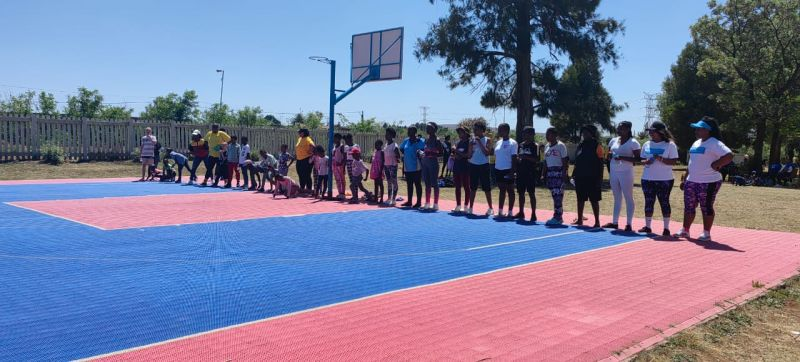

SOS Children's Villages
Ennerdale Background
About EnnerdaleEnnerdale is a suburb of Johannesburg, the largest city in South Africa with a population of around 8 million. It is also home to some of the largest townships in the country. Ennerdale was built in the 1970s in an attempt by the local authorities to create a township that would maintain racial segregation. Apartheid policies are now a thing of the past, but the socio-economic and political remains of apartheid are still deeply rooted in the country's urban system. Most of Johannesburg's townships are still predominantly Black African communities. Thousands of children grow up in poverty and experience social exclusion and inequality from a very young age. |
SOS Children's Villages in EnnerdaleSince 1984, SOS Children’s Villages has been supporting children, young people and families and advocating for their rights in Ennerdale. |
| Key Issues |
|---|
| Poverty |
| Social Exclusion |
| Inequality |
| Legacy of Apartheid |
© 2026 SOS Children's Villages